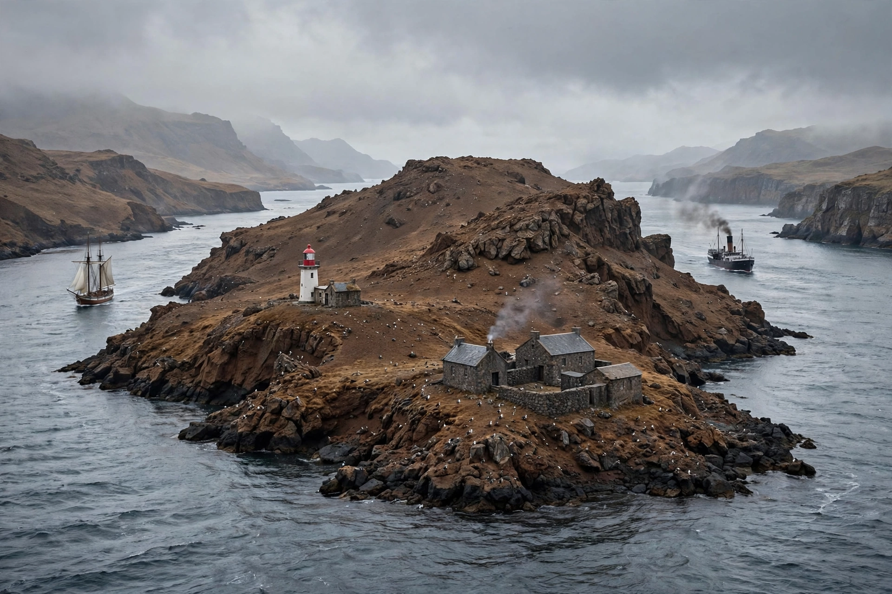

From Wikipedia, the free encyclopedia

| Perim Island | |
|---|---|
| Native name | Mayyun Island |
| Location | Bab el-Mandeb strait, between the Red Sea and Gulf of Aden |
| Area | About 13 km² |
| Country | Yemen |
| Strategic role | Former British coaling station guarding the Red Sea route |
Perim Island, also known as Mayyun Island, is a volcanic island of Yemen situated in the strait of Bab el-Mandeb at the southern entrance to the Red Sea, off the southwest coast of the Arabian Peninsula. The island divides the strait into two channels: the eastern Bab Iskender, only about 3 km wide, and the wider western Dact-el-Mayun channel used by most shipping.
Because of its commanding position on the route between Europe and India, Perim was repeatedly contested. British forces occupied it briefly in 1799 during the Napoleonic Wars, and Britain seized it again in 1857, administering it from Aden as a coaling station for steamers using the newly opened Suez Canal route. A lighthouse was erected in 1861, and a small coaling settlement grew up around the harbour, though the island's lack of fresh water always limited it. When Britain withdrew from Aden in 1967, Perim passed to South Yemen and later to the unified Republic of Yemen.
During the Yemeni civil war the island was taken by Houthi forces in 2015 and retaken later that year by the Saudi-led coalition supporting the Yemeni government, underscoring its enduring value as a chokepoint position overlooking one of the world's busiest shipping lanes in the Gulf of Aden.